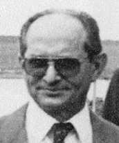

José Maia Leite, natural de Porto Nacional, engenheiro civil e um dos grandes líderes históricos da luta pela criação do Estado do Tocantins. Descendente do pioneiro Luiz Leite Ribeiro, envolveu-se desde jovem com a causa nortista, participando da fundação do Movimento União do Norte, em 1959, em São Paulo.
Foi membro fundador e primeiro presidente da CONORTE (Comissão de Estudos dos Problemas do Norte Goiano), entidade responsável por articular estudos, eventos e publicações em prol da divisão do Estado de Goiás. A CONORTE teve papel decisivo na mobilização que resultou na criação do Tocantins em 1988. Em Brasília, destacou-se também na área da engenharia civil, ocupando cargos de liderança em empresas como a Civilsan e a Construtins, além de ser homenageado com a Medalha do Mérito Industrial, em 1988.
